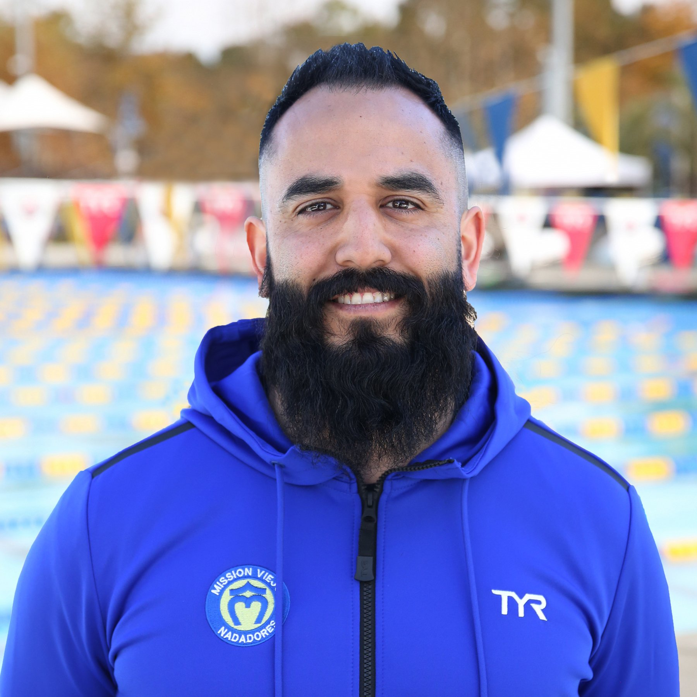

Hace poco más de tres décadas, en un pequeño barrio de la ciudad de Guatemala, surgió la inspiración para lo que hoy es una de las escuelas de natación más prestigiosas del país. Todo comenzó con un joven apasionado por el agua y los deportes acuáticos, llamado Carlos Méndez. Carlos, un nadador talentoso desde su infancia, había competido en varios torneos nacionales e internacionales, representando a Guatemala con orgullo. Sin embargo, se dio cuenta de que muchos niños y jóvenes en su país no tenían acceso a instalaciones adecuadas ni a una formación de calidad en natación. Así nació su sueño de crear una escuela de natación que pudiera brindar oportunidades a las futuras generaciones de nadadores guatemaltecos. En 1992, con tan solo 25 años, Carlos decidió convertir su sueño en realidad. Con sus ahorros y el apoyo de su familia, compró un terreno en el barrio donde creció. Con esfuerzo y dedicación, transformó ese espacio en la primera piscina de la Escuela de Natación "AquaVida". La piscina era modesta, pero Carlos tenía grandes planes. La comunidad local respondió con entusiasmo. Padres de familia inscribieron a sus hijos en las clases de natación, confiando en la visión y el compromiso de Carlos. Con el tiempo, AquaVida se ganó una reputación por su excelencia en la enseñanza, sus métodos innovadores y su ambiente inclusivo y motivador. |
Nuestro fundador:
 |